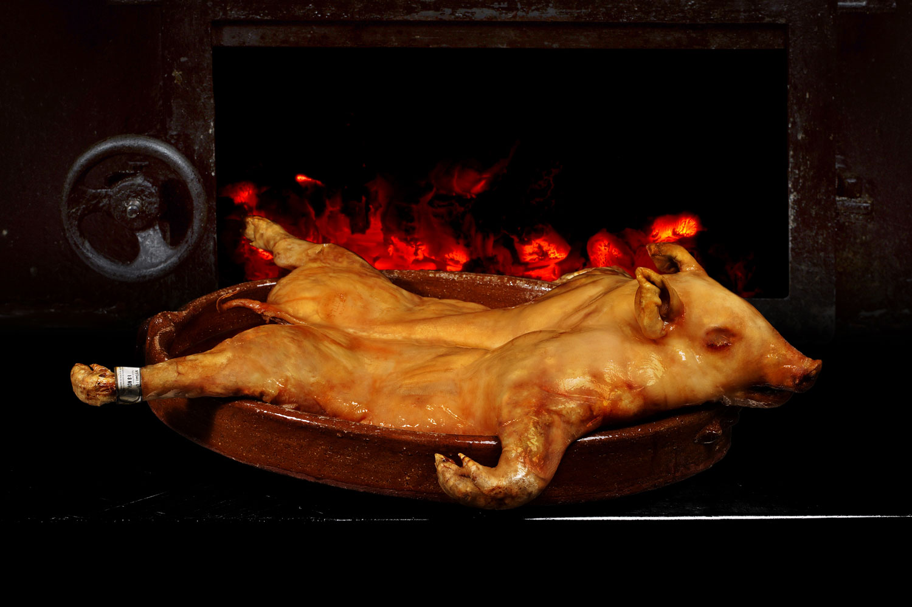

Gastronomía de Segovia
La cocina segoviana es una de las más reconocidas de Castilla y León. Sus platos tradicionales, elaborados con productos de la tierra, conquistan a visitantes de todo el mundo. El asado al horno de leña es el símbolo gastronómico por excelencia, aunque la variedad culinaria de la provincia va mucho más allá.
Platos más populares
- Cochinillo asado (tostón segoviano)
- Judiones de La Granja con chorizo y morcilla
- Sopa castellana (sopa de ajo)
- Lechazo asado al horno de leña
- Ponche segoviano (postre emblemático)
Productos de la tierra
-
Legumbres y verduras
- Judiones de La Granja: alubias blancas gigantes con denominación de origen propia
- Garbanzos de Pedrosillo
- Alubias de El Barco cultivadas en el piedemonte serrano
- Carnes: ternera, cordero lechal y cerdo ibérico de la sierra
- Quesos artesanales de oveja churra de los pueblos serranos
- Vinos con Indicación Geográfica Protegida «Vino de la Tierra de Castilla y León»
Términos gastronómicos segovianos
- Tostón
- Denominación local del cochinillo, lechón de menos de tres semanas asado en cazuela de barro. Su piel crujiente es su característica más destacada.
- Ponche segoviano
- Pastel artesano elaborado con capas de bizcocho, crema pastelera y mazapán, cubierto con azúcar glaseado quemado. Es el dulce más representativo de la ciudad.
- Judiones
- Alubias blancas de gran tamaño originarias del Real Sitio de La Granja de San Ildefonso. Se cocinan en guisos contundentes con embutidos y morcilla ibérica.
- Sopa castellana
- Caldo elaborado con ajo, pan duro del día anterior, pimentón ahumado, jamón serrano, chorizo y huevo escalfado. Plato de origen humilde y sabor intenso.
- Resoli
- Licor artesanal segoviano elaborado con café, canela, anís y azúcar. Se sirve habitualmente como digestivo tras las comidas.
Tabla de platos típicos y características
| Plato típico | Descripción |
|---|---|
| Cochinillo asado | Lechón de menos de tres semanas asado en horno de leña de enebro. Se corta con el borde de un plato para demostrar su terneza. Especialidad estrella de Segovia reconocida internacionalmente. |
| Judiones de La Granja | Alubias blancas gigantes de La Granja de San Ildefonso, cocinadas a fuego lento con chorizo, morcilla, jamón y tocino. Plato contundente de la cocina de montaña castellana. |
| Ponche segoviano | Pastel artesanal de varias capas de bizcocho, crema pastelera y mazapán, cubierto con azúcar glaseado y quemado con soplete. Dulce emblemático de la ciudad desde el siglo XIX. |
| Sopa castellana | Sopa de ajo elaborada con pan duro, aceite de oliva, pimentón ahumado, jamón serrano, chorizo y huevo escalfado. Receta de cocina popular castellana de origen medieval. |
Imagen del cochinillo asado
